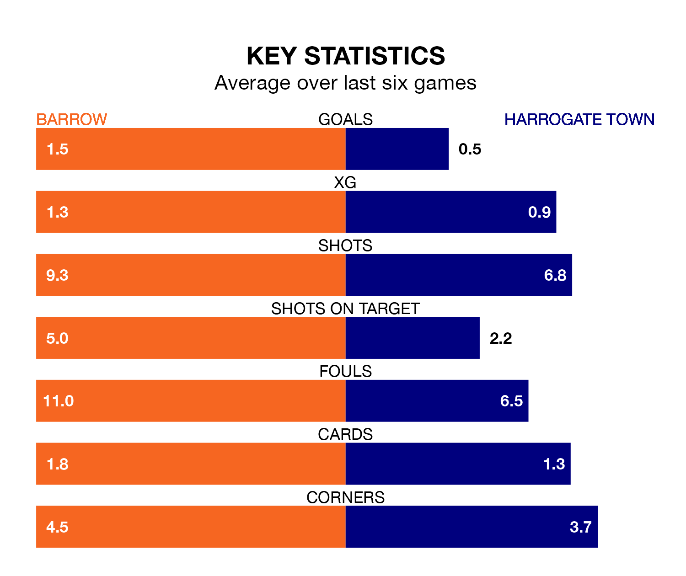

Barrow are heavy favourites to keep all three points at home in Saturday's kick-off against Harrogate Town.
The Bluebirds, who sit sixth in EFL League Two with 36 games played, are priced at 1.6 to seal victory at the SO Legal Stadium.
Sitting eight places and 10 points behind them in the table, Harrogate are 5.5 to win with *Betting Company*, while the draw is at 4.0.
Barrow are in mixed form in EFL League Two, with two wins and a draw from their last six games.
With no wins and three draws over that period, Harrogate's form is worse – they have taken three points from 18, compared to the Bluebirds' seven.
In the last 10 years, Barrow and Harrogate have played each other on 13 occasions. Barrow won two of them, Harrogate seven, and they drew four times.
On average, the Bluebirds scored 0.8 goals and Harrogate 1.5 in those matches.
Their last meeting was on September 2, when Barrow won 1-0 away.
With Paul Farman between the sticks, the home side can rely on one of the league's safest pair of hands. He has kept 12 clean sheets in his 34 appearances this season in EFL League Two.
In Town's net, Mark Oxley has three clean sheets in 16 games. He has conceded a goal every 74 minutes, 10% more often than the 83 minutes between goals for Farman.
With 43 goals in 37 games so far this season, the visitors are scoring at below the league average rate with 1.2 goals per game. And they are conceding at an average rate, letting in 55 goals at a rate of 1.5 per game.
Barrow are also below average scorers, with 1.4 goals per game, compared to a league average of 1.5. They have conceded 1.1 goals per game.
Barrow's last match was on Tuesday, a 1-1 draw against Walsall, with Dean Campbell getting the goal for the Bluebirds.
Harrogate drew 0-0 with Wrexham last time out, also on Tuesday.
Updated: 15:10 (UTC), 15/03/24